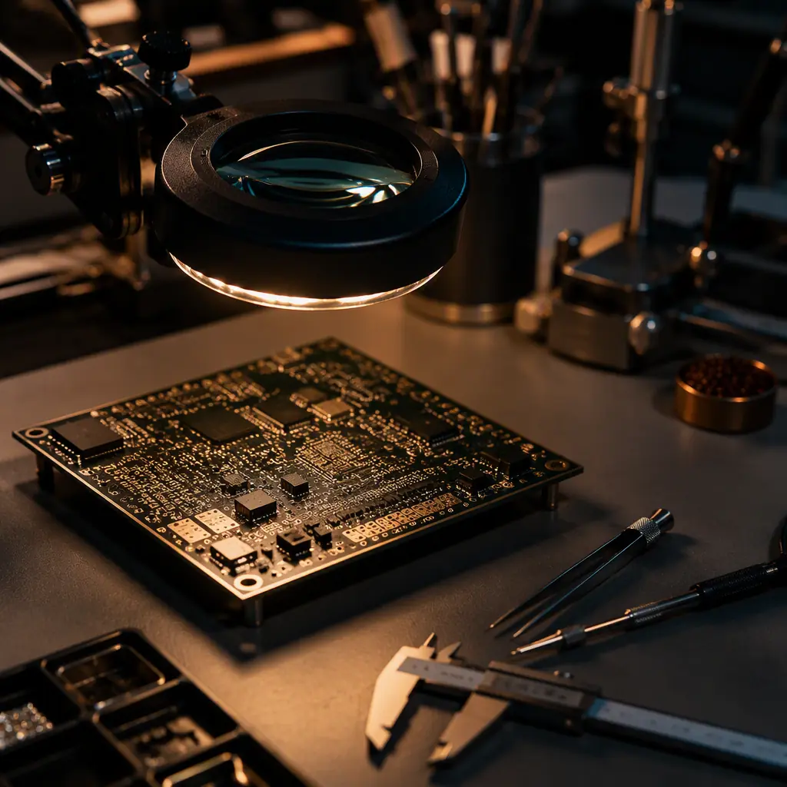
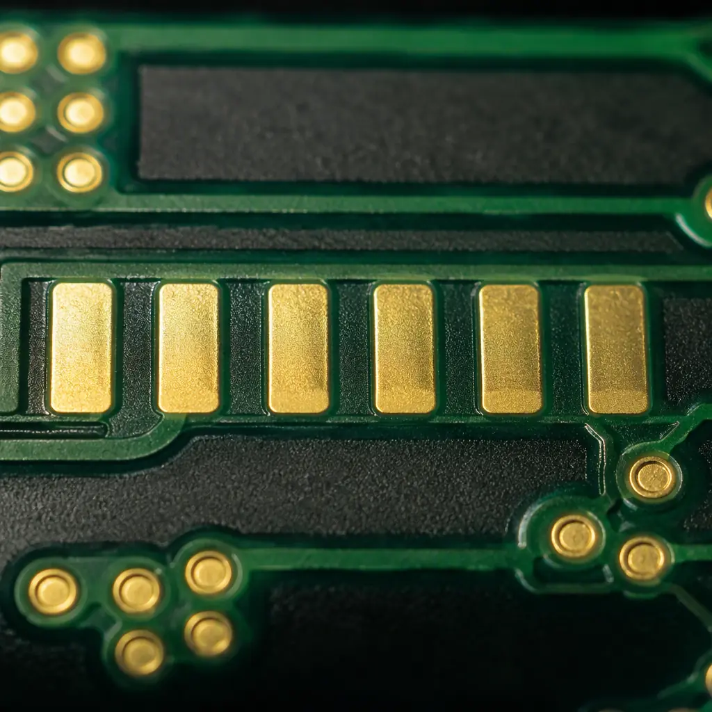

When you're importing PCBs from a contract manufacturer 6,000 miles away, your quality assurance window is the 24–72 hours between final production and container loading. Once those boards leave Shenzhen, catching a solder mask registration error or a warped panel costs you return freight, production delays, and a damaged supplier relationship. A structured pre-shipment inspection — executed before payment release — is your single most powerful quality control tool as an overseas buyer. This guide gives you the exact checklist, AQL sampling plan, and red flags that catch 95% of common PCB defects before they become your problem.
At Huaxing PCBA, our outgoing quality control (OQC) process inspects 100% of production lots against IPC-A-600 Class 2 and Class 3 acceptance criteria before packaging. We've seen which defects slip through when inspections are cursory, and we've built this checklist from real defect data across thousands of customer shipments. Here's what to look for — whether you're inspecting in person, via a third-party service, or reviewing factory inspection reports remotely.

The OQC Process: What Should Happen Before Your Boards Ship
Pre-shipment inspection is not a single glance at a few boards. It's a structured, multi-stage process that verifies conformance at the lot level. A proper OQC workflow at a competent PCB factory follows this sequence:
Document Review — Before Touching a Single Board
The inspector starts with the paperwork: your purchase order, the Gerber-derived fabrication drawing, the IPC class specified (Class 2 or Class 3), and any special requirements (controlled impedance test report, microsection coupon, solderability certificate). Verify that the lot quantity matches the PO, that the revision matches, and that the specified surface finish, solder mask color, and silkscreen color are correctly recorded. If the paperwork is wrong here, everything downstream is suspect. For understanding how to specify requirements correctly in your PO, read our IPC standards comparison guide.
AQL Sampling — Don't Inspect Every Board, But Be Statistically Rigorous
Use ANSI/ASQ Z1.4 (formerly MIL-STD-1916) single sampling plans. For PCB lots of 501–3,200 units, a Level II inspection with AQL 1.0 (critical defects) and AQL 2.5 (major defects) means inspecting 80 boards. If ≤2 critical defects and ≤5 major defects are found, the lot passes. If the defect count exceeds the acceptance number, the entire lot should be 100% screened or rejected. Do not accept "we'll just fix the bad ones" — for non-repairable PCB defects like delamination or inner-layer shorts, the affected boards are scrap. For a deeper understanding of PCB defect classification, see our incoming quality inspection guide for the IQC side of the equation.
Visual Inspection — The First Line of Defense
Under 3–5× magnification with adequate lighting (≥1,000 lux at the inspection surface), the inspector checks: solder mask registration (no peeling, no bridging between pads, no mask in holes), silkscreen legibility and alignment, surface finish uniformity (no discoloration on ENIG pads, no exposed copper on HASL pads), edge quality (no burrs, no delamination), and general workmanship. This should follow the IPC-A-600 acceptance criteria specific to your specified class. Class 3 boards have tighter criteria on every parameter — our Class 2 vs Class 3 comparison covers the specific differences.

The 10-Point Pre-Shipment Inspection Checklist
Every OQC inspection should verify these ten dimensions before signing off. Missing any of these is how defects cross the ocean.
Dimensional Verification — Don't Trust the Fab Drawing Blind
Measure 5 boards from different panels across the lot. Check: overall length/width (±0.15mm for standard tolerance), board thickness (verify at 3 points per board — corners and center), hole diameters (sample 10 holes per board with pin gauge or optical measurement), and slot dimensions. Warpage/twist: place board on granite surface plate, measure maximum deviation. IPC-A-600 allows 0.75% bow and twist for surface-mount boards (Class 2) and 0.5% for Class 3 — a 200mm board should not deviate more than 1.0mm from flat. This is the #1 missed defect — we see warped boards that passed electrical test but failed assembly because pick-and-place vacuum couldn't grip them. Our PCB testing methods guide covers the full verification sequence.
Solder Mask Integrity — Registration, Coverage, and Cure
Check under magnification: mask-to-pad registration (no mask encroaching on BGA pads — minimum 75μm clearance for Class 3), no mask peeling at edges or around vias (tape test: apply and remove 3M 600 tape — no mask lift-off), no pinholes or bubbles in the mask surface, mask thickness on conductor edges (≥5μm for Class 2, ≥8μm for Class 3 per IPC-SM-840), and full curing — uncured mask feels tacky and traps flux residues. This is especially critical for PCB solder mask type selection — LPI, dry film, and UV ink cure differently and have different defect profiles.
Surface Finish Quality — Appearance and Solderability
ENIG (Electroless Nickel Immersion Gold): check for black pad (dark, non-reflective patches — indicates excessive nickel oxidation, reject lot immediately), uniform gold color (gold thickness should be 0.05–0.12μm per IPC-4552), and no skip plating. HASL: check for uniform coating with no exposed copper, no solder icicles or peaks (>0.15mm protrusion is rejectable), pad flatness acceptable for SMT. OSP: uniform transparent organic coating, no discoloration indicating oxidation. For every surface finish, perform a solderability test on 3 sample boards from the lot: dip in SAC305 at 255°C for 3 seconds, verify ≥95% wetting. Our surface finish selection guide covers which finish to specify for your application.
Electrical Test Report Verification
Every production lot should ship with an electrical test report (flying probe or bed-of-nails). Verify: test method matches what you specified (100% netlist test vs sample test), report shows 0 opens and 0 shorts across all nets, test voltage was appropriate (100–250V for standard boards, 500V+ for high-voltage designs), and the report date and lot number match your shipment. For high-voltage PCB designs, Hi-Pot testing must be performed and documented separately. Ask to see the actual test log, not just a summary — summary-only reports hide intermittent failures that were retested and passed on a second attempt.
Impedance Control Verification — Don't Trust the Coupon Alone
For controlled-impedance PCBs (typically 50Ω single-ended, 100Ω differential), verify: the TDR test report shows measured impedance within your specified tolerance (standard is ±10%, tight-tolerance is ±5%), the test coupon is from the same production panel as your boards (verify panel serial number), and impedance values are stable across the coupon length. Impedance is not something you can check visually — a missing or out-of-spec TDR report is a reject. See our impedance control guide for how to specify requirements in your fab drawing.
Microsection Analysis — The Truth Is in the Cross-Section
For multilayer PCBs (≥6 layers) or any Class 3 board, a microsection coupon from the production panel should be analyzed. Key checks: inner-layer registration (layer-to-layer misregistration <75μm for Class 2, <50μm for Class 3), copper plating thickness in holes (≥20μm average, ≥18μm minimum for Class 2), no voids in the copper barrel exceeding 5% of hole wall area, resin recession from inner-layer copper (≤80μm for Class 3), and no delamination at the weave-resin interface. A microsection takes 2–4 hours to prepare but reveals defects that electrical test and visual inspection both miss. For PCB stackup design validation, microsection is non-negotiable.
Cleanliness and Ionic Contamination
Residual ionic contamination causes electrochemical migration and dendritic growth — shorts that develop weeks or months after assembly, when the board is in the field. The IPC standard is ≤1.56 μg/cm² NaCl equivalent (ROSE test per IPC-TM-650 2.3.25). Ask for the cleanliness test report. Boards that pass electrical test but fail ROSE are time bombs. This is especially critical for medical device PCBs and aerospace applications where field failures have safety consequences.
RoHS and Material Compliance Documentation
Verify: the RoHS compliance certificate covers the specific lot, the certificate references the correct test standard (IEC 62321), and restricted substance levels are below thresholds (Pb <1,000ppm, Hg <1,000ppm, Cd <100ppm, Cr6+ <1,000ppm, PBB/PBDE <1,000ppm). For EU buyers, REACH SVHC declarations must accompany RoHS certificates. Raw material certificates (FR-4 laminate, solder mask ink, surface finish chemistry) should be available on request. Our RoHS compliance guide has the complete regulatory framework.
Packaging Verification — Moisture, ESD, and Mechanical Protection
PCBs must be packed in moisture-barrier bags (MBB) with desiccant and humidity indicator cards (HIC) per IPC/JEDEC J-STD-033 for MSL-rated assemblies. Vacuum seal is preferred. Inside the MBB: boards separated by interleaving paper or foam, stacked with rigid backing boards on top and bottom to prevent bending. Outer packaging: double-wall corrugated cartons with edge protectors. For sea freight, add vapor-phase corrosion inhibitor (VCI) paper for ENIG and immersion silver finishes which are sensitive to sulfur atmospheres. Packaging that looks "good enough" often isn't — moisture ingress during 3 weeks at sea ruins a perfectly manufactured lot. See our MSL and moisture sensitivity guide for handling requirements.
Labeling and Traceability
Every package should carry: supplier name, your PO number, part number/revision, lot number, quantity, date of manufacture, and a 2D barcode or QR code linking to the full inspection data package. UL marking (if applicable) must be on every individual board, legible, with the correct UL file number. Traceability is what connects a field failure back to a specific production lot — without it, a single bad lot forces a recall of every board from that supplier. Our certifications and compliance guide details the mandatory markings for each standard.
Red Flag Rule: If the factory cannot or will not provide microsection photos, a TDR impedance report, and a ROSE cleanliness test report — for a lot you're paying thousands of dollars for — reconsider the supplier. These three reports cost the factory less than $50 combined to produce and are standard OQC deliverables at any IPC-certified facility.
Remote Inspection: How to Verify Quality Without Flying to Shenzhen
Most overseas buyers cannot inspect every lot in person. Here's how to build a remote inspection process that's 90% as effective as an on-site visit:
Require a Photo/Video Inspection Package With Every Shipment
Specify in your PO: photos of the entire lot laid out on the inspection table (proves quantity), close-up photos of 5 specific areas on 3 sample boards (shows detail), a 30-second video scan of a board under magnification (proves the inspection was actually performed), and photos of the packaging process — boards in MBB, desiccant visible, sealed bag, and outer carton with labels. A supplier who pushes back on this request is telling you something about their confidence in their quality. At Huaxing, this is standard OQC documentation for every export shipment.
Third-Party Inspection Services — When the Order Value Justifies It
For orders above $5,000, a third-party inspection (SGS, Bureau Veritas, TÜV, AsiaInspection/QIMA) costs $250–$400 per man-day in China. The inspector follows your checklist, takes independent photos and measurements, and issues a report before you authorize shipment. This is 5–8% of a $5,000 order — cheap insurance. Specify that the inspector must witness the packaging process — not just inspect boards on the table. Our supplier audit checklist includes third-party inspection as a scored criterion.
Ship a Golden Sample With the First Order
After your first production run with a new supplier, have them ship you 2–3 "golden sample" boards from the approved lot — properly packaged, with full inspection data. These become your reference standard for all future lots. When you receive the next shipment, compare the new boards to the golden sample. Differences in surface finish appearance, solder mask color, or silkscreen quality are immediately obvious against a reference. Golden samples also settle disputes: "This doesn't match the approved sample" is unambiguous. For cost-sensitive production, golden samples prevent the slow quality drift that happens when inspection standards relax over time.
What to Do When Inspection Fails
An inspection failure doesn't necessarily mean the supplier is bad — it means your quality system is working. Here's the escalation ladder:
Critical Defects (1 found) → Reject Lot, Require Root Cause Analysis
A single critical defect — delamination, inner-layer short, ENIG black pad, wrong material — is an automatic lot rejection. Require the factory to perform root cause analysis and corrective action (CAPA) before re-manufacturing. Do not accept a partial rework: if the root cause is a process parameter (over-etching, under-curing), every board in the lot is suspect, not just the one found defective. Our incoming QC guide covers what to do when defects reach your facility despite pre-shipment inspection.
Major Defects (exceed AQL) → 100% Screen or Reject
When major defect count exceeds the AQL acceptance number, offer the factory two options: 100% sort the entire lot (with you verifying the sort results), or remake the lot. Sorting is viable for visual defects (mask scratches, silkscreen smudges); it is not viable for hidden defects (inner-layer registration, contamination). Be realistic about which defects are sortable and which demand a remake. Our price negotiation guide covers how to handle quality-related cost discussions.
Pattern of Failures → Supplier Audit, Not Just Another Inspection
If the same defect type appears across 3 consecutive lots, the problem is systemic — not a random event. At this point, a remote inspection is not enough. Either conduct a supplier audit (on-site or via third-party) or qualify an alternative source. Document every failure and the supplier's CAPA response — if you need to switch suppliers, this documentation protects your sourcing decision. Read our supplier audit guide for the 10-point evaluation framework.
Summary: Pre-Shipment Inspection Is Your Last Line of Defense
Once PCBs leave the factory, every defect becomes exponentially more expensive: a solder mask issue caught at OQC costs the factory a remake. That same issue caught at your assembly line in Chicago or Stuttgart costs you $500–$5,000 in downtime, rework, and expedited replacements — plus a damaged production schedule. The 10-point checklist, AQL sampling, verified test reports, and documented packaging you require before shipment are not bureaucratic overhead. They are ROI: $250–$400 in inspection cost protects thousands of dollars in production value.
At Huaxing PCBA, every export shipment includes a complete OQC data package: lot photos, microsection images, electrical test log, TDR impedance report, ROSE cleanliness certificate, RoHS/REACH compliance documents, and packaging verification photos. We ship to 30+ countries and our 98.7% first-pass yield means our pre-shipment inspection catches issues before our customers ever see them. Review our certifications or request a quote with your Gerber files for your next PCB order.